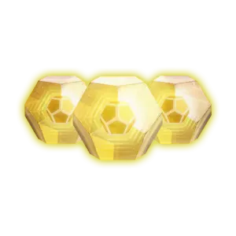
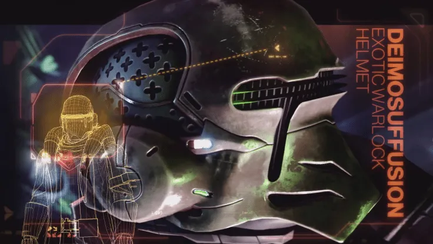

Exotics
Exotics are a special class of gear providing unique benefits, with the trade off being that you are not able to equip more than one exotic weapon, and more than one exotic armor.

When creating a loadout, it is very smart for you to include exotics as they are the most powerful gear tier in the game. Most builds revolve around an exotic armor and weapon, although some are more flexible on the weapon department.

Exotics can be found randomly, and by doing quests. Expansion specific exotics can be found in various ways - with the current being getting keycards to unlock a room in missions.
Back Home